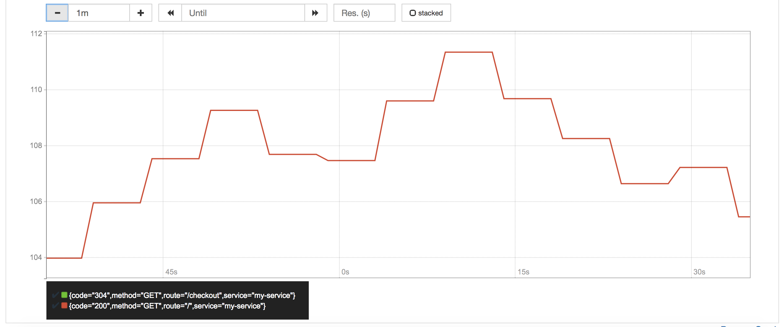
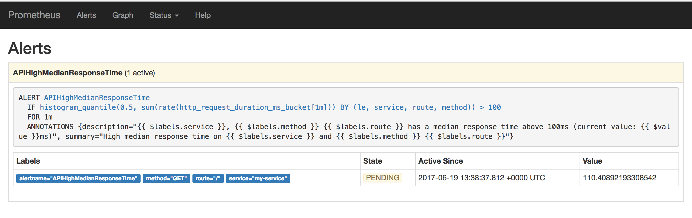
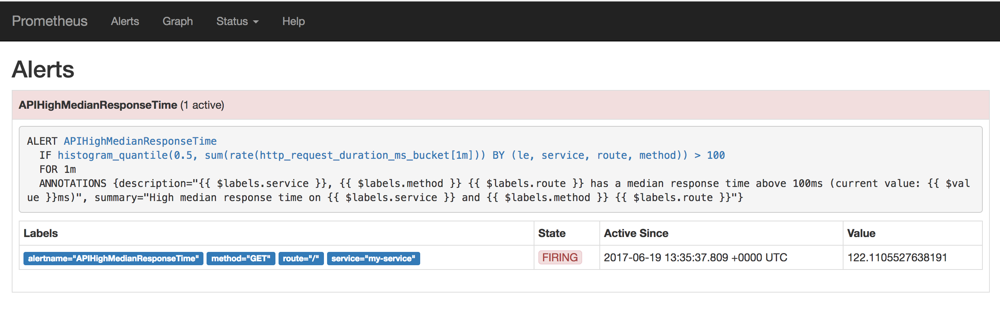
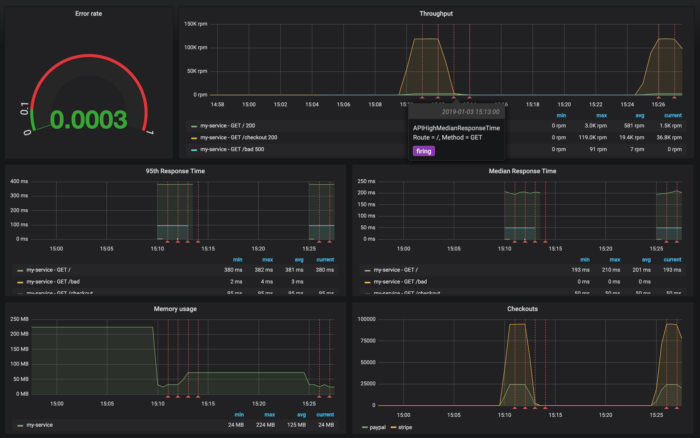

Monitoring¶
One of the most important decisions to make when setting up web application monitoring is deciding on the type of metrics you need to collect about your app. The metrics you choose simplifies troubleshooting when a problem occurs and also enables you to stay on top of the stability of your services and infrastructure.
The RED method follows on the principles outlined in the Four Golden Signals, which focuses on measuring things that end-users care about when using your web services. With the RED method, three key metrics are instrumented that monitor every microservice in your architecture:
- (Request) Rate - the number of requests, per second, your services are serving.
- (Request) Errors - the number of failed requests per second.
- (Request) Duration - The amount of time each request takes expressed as a time interval.
Rate, Errors and Duration attempt to cover the most obvious web service issues. These metrics also capture an error rate that is expressed as a proportion of request rate.
Of course, this is just a good starting point for metrics instrumentation. Generally, the more metrics we collect from an application the better.
Instrument first, ask questions later During development you will never know what questions you need to ask later. Software needs good instrumentation, it’s not optional. Metrics are cheap. Use them generously. The First and the most important rule, if you have to remember only one thing remember this one. Instrument all the things!
Deploy the monitoring stack in Docker Compose¶
1). Start the monitoring stack:
cd b2m-nodejs-v2/lab-3 docker-compose build docker-compose up -d
Note, it may take a while for the first time, because it will download the monitoring stack images from DockerHub and build an image for our Node.js application.
2). While waiting for containers, review the configuration of our monitoring lab.
- b2m-nodejs-v2/lab-3/docker-compose.yaml - this is the main config file for docker-compose stack which specifies all options for all containers in the stack.
- b2m-nodejs-v2/lab-3/app/server.js - the source code of our sample Node.js application.
- b2m-nodejs-v2/lab-3/app/Dockerfile - this file is used to build your app docker image.
3). Verify that you can access the monitoring stack UIs:
- Prometheus: http://<your-hostname>:9090
- Grafana: http://<your-hostname>:3000 (user/pw: admin/foobar)
4). Verify that your Node.js app works:
curl http://<your-hostname>:3003
Instrument application code with Node.js client library for Prometheus¶
Expose default Node.js runtime metrics¶
1). Go to the directory b2m-nodejs-v2/lab-3/app where the server.js file is located and add the following dependency to the package.json:
"prom-client": "^11.2.1"
There are some default metrics recommended by Prometheus itself.
To collect these, call collectDefaultMetrics
Some of the metrics, concerning File Descriptors and Memory, are only available on Linux.
In addition, some Node-specific metrics are included, such as event loop lag, active handles and Node.js version. See what metrics there are in https://github.com/siimon/prom-client/lib/metrics.
collectDefaultMetrics takes 1 options object with 3 entries, a timeout for how
often the probe should be fired, an optional prefix for metric names
and a registry to which metrics should be registered. By default probes are
launched every 10 seconds, but this can be modified like this:
const client = require('prom-client'); const collectDefaultMetrics = client.collectDefaultMetrics; // Probe every 5th second. collectDefaultMetrics({ timeout: 5000 });
2). Edit server.js and uncomment the following lines to enable exposure of default set of Node.js metrics on standard Prometheus route /metrics
const Prometheus = require('prom-client') const metricsInterval = Prometheus.collectDefaultMetrics()
and
app.get('/metrics', (req, res) => { res.set('Content-Type', Prometheus.register.contentType) res.end(Prometheus.register.metrics()) })
3). Rebuild you app container
cd ~/b2m-nodejs-v2/lab-3 docker-compose down docker-compose build docker-compose up -d
Run a couple of transactions by refreshing the URL: http://<your-hostname>:3003/checkout
Use browser or curl to access http://<your-hostname>:3003/metrics in order to verify exposed metrics. Output should be similar to:
# HELP process_cpu_user_seconds_total Total user CPU time spent in seconds.
# TYPE process_cpu_user_seconds_total counter
process_cpu_user_seconds_total 0.028084 1546452963611
# HELP process_cpu_system_seconds_total Total system CPU time spent in seconds.
# TYPE process_cpu_system_seconds_total counter
process_cpu_system_seconds_total 0.0038780000000000004 1546452963611
# HELP process_cpu_seconds_total Total user and system CPU time spent in seconds.
# TYPE process_cpu_seconds_total counter
process_cpu_seconds_total 0.031962 1546452963611
# HELP process_start_time_seconds Start time of the process since unix epoch in seconds.
# TYPE process_start_time_seconds gauge
process_start_time_seconds 1546452953
# HELP process_resident_memory_bytes Resident memory size in bytes.
# TYPE process_resident_memory_bytes gauge
process_resident_memory_bytes 29188096 1546452963611
# HELP nodejs_eventloop_lag_seconds Lag of event loop in seconds.
# TYPE nodejs_eventloop_lag_seconds gauge
nodejs_eventloop_lag_seconds 0.000393303 1546452963612
# HELP nodejs_active_handles_total Number of active handles.
# TYPE nodejs_active_handles_total gauge
nodejs_active_handles_total 3 1546452963611
# HELP nodejs_active_requests_total Number of active requests.
# TYPE nodejs_active_requests_total gauge
nodejs_active_requests_total 0 1546452963611
# HELP nodejs_heap_size_total_bytes Process heap size from node.js in bytes.
# TYPE nodejs_heap_size_total_bytes gauge
nodejs_heap_size_total_bytes 20217856 1546452963611
# HELP nodejs_heap_size_used_bytes Process heap size used from node.js in bytes.
# TYPE nodejs_heap_size_used_bytes gauge
nodejs_heap_size_used_bytes 8464704 1546452963611
# HELP nodejs_external_memory_bytes Nodejs external memory size in bytes.
# TYPE nodejs_external_memory_bytes gauge
nodejs_external_memory_bytes 24656 1546452963611
# HELP nodejs_heap_space_size_total_bytes Process heap space size total from node.js in bytes.
# TYPE nodejs_heap_space_size_total_bytes gauge
nodejs_heap_space_size_total_bytes{space="read_only"} 0 1546452963612
nodejs_heap_space_size_total_bytes{space="new"} 8388608 1546452963612
nodejs_heap_space_size_total_bytes{space="old"} 8134656 1546452963612
nodejs_heap_space_size_total_bytes{space="code"} 1048576 1546452963612
nodejs_heap_space_size_total_bytes{space="map"} 1073152 1546452963612
nodejs_heap_space_size_total_bytes{space="large_object"} 1572864 1546452963612
# HELP nodejs_heap_space_size_used_bytes Process heap space size used from node.js in bytes.
# TYPE nodejs_heap_space_size_used_bytes gauge
nodejs_heap_space_size_used_bytes{space="read_only"} 0 1546452963612
nodejs_heap_space_size_used_bytes{space="new"} 829768 1546452963612
nodejs_heap_space_size_used_bytes{space="old"} 6008448 1546452963612
nodejs_heap_space_size_used_bytes{space="code"} 847136 1546452963612
nodejs_heap_space_size_used_bytes{space="map"} 533016 1546452963612
nodejs_heap_space_size_used_bytes{space="large_object"} 249024 1546452963612
# HELP nodejs_heap_space_size_available_bytes Process heap space size available from node.js in bytes.
# TYPE nodejs_heap_space_size_available_bytes gauge
nodejs_heap_space_size_available_bytes{space="read_only"} 0 1546452963612
nodejs_heap_space_size_available_bytes{space="new"} 3294904 1546452963612
nodejs_heap_space_size_available_bytes{space="old"} 1656536 1546452963612
nodejs_heap_space_size_available_bytes{space="code"} 0 1546452963612
nodejs_heap_space_size_available_bytes{space="map"} 80 1546452963612
nodejs_heap_space_size_available_bytes{space="large_object"} 1506500096 1546452963612
# HELP nodejs_version_info Node.js version info.
# TYPE nodejs_version_info gauge
nodejs_version_info{version="v10.7.0",major="10",minor="7",patch="0"} 1
Define custom metric¶
Node.js Prometheus client library allows to define various types of Prometheus metrics like histograms, summaries, gauges and counters. More detailed description of metric types can be found in Prometheus documentation.
In this lab we will define two custom metrics:
- counter
checkouts_totalwhich will store a total number ofcheckoutrequests - histogram
http_request_duration_mswhich will store percentiles of application requests response time
Uncomment the rest of commented lines in server.js.
checkouts_total¶
Declaration of checkouts_total counter.
const checkoutsTotal = new Prometheus.Counter({ name: 'checkouts_total', help: 'Total number of checkouts', labelNames: ['payment_method'] })
This counter will be incremented for every checkout request
checkoutsTotal.inc({ payment_method: paymentMethod })
http_request_duration_ms¶
Declaration of http_request_duration_ms histogram:
const httpRequestDurationMicroseconds = new Prometheus.Histogram({ name: 'http_request_duration_ms', help: 'Duration of HTTP requests in ms', labelNames: ['method', 'route', 'code'], buckets: [0.10, 5, 15, 50, 100, 200, 300, 400, 500] // buckets for response time from 0.1ms to 500ms })
The current time is recorded before each request:
app.use((req, res, next) => { res.locals.startEpoch = Date.now() next() })
We record the current time also after each request and update our http_request_duration_ms histogram accordingly:
app.use((req, res, next) => { const responseTimeInMs = Date.now() - res.locals.startEpoch httpRequestDurationMicroseconds .labels(req.method, req.route.path, res.statusCode) .observe(responseTimeInMs) next() })
After you complete code changes, rebuild your app container:
cd ~/b2m-nodejs-v2/lab-3 docker-compose down docker-compose build docker-compose up -d
Run a couple of transactions by refreshing the URL: http://<your-hostname>:3003/checkout
Use browser to access http://<your-hostname>:3003/metrics to verify exposed metrics. The output should be similar to:
(...)
# HELP checkouts_total Total number of checkouts
# TYPE checkouts_total counter
checkouts_total{payment_method="paypal"} 7
checkouts_total{payment_method="stripe"} 5
# HELP http_request_duration_ms Duration of HTTP requests in ms
# TYPE http_request_duration_ms histogram
http_request_duration_ms_bucket{le="0.1",code="304",route="/",method="GET"} 0
http_request_duration_ms_bucket{le="5",code="304",route="/",method="GET"} 0
http_request_duration_ms_bucket{le="15",code="304",route="/",method="GET"} 0
http_request_duration_ms_bucket{le="50",code="304",route="/",method="GET"} 0
http_request_duration_ms_bucket{le="100",code="304",route="/",method="GET"} 0
http_request_duration_ms_bucket{le="200",code="304",route="/",method="GET"} 3
http_request_duration_ms_bucket{le="300",code="304",route="/",method="GET"} 3
http_request_duration_ms_bucket{le="400",code="304",route="/",method="GET"} 3
http_request_duration_ms_bucket{le="500",code="304",route="/",method="GET"} 3
http_request_duration_ms_bucket{le="+Inf",code="304",route="/",method="GET"} 3
http_request_duration_ms_sum{method="GET",route="/",code="304"} 415
http_request_duration_ms_count{method="GET",route="/",code="304"} 3
http_request_duration_ms_bucket{le="0.1",code="500",route="/bad",method="GET"} 0
http_request_duration_ms_bucket{le="5",code="500",route="/bad",method="GET"} 1
http_request_duration_ms_bucket{le="15",code="500",route="/bad",method="GET"} 1
http_request_duration_ms_bucket{le="50",code="500",route="/bad",method="GET"} 1
http_request_duration_ms_bucket{le="100",code="500",route="/bad",method="GET"} 1
http_request_duration_ms_bucket{le="200",code="500",route="/bad",method="GET"} 1
http_request_duration_ms_bucket{le="300",code="500",route="/bad",method="GET"} 1
http_request_duration_ms_bucket{le="400",code="500",route="/bad",method="GET"} 1
http_request_duration_ms_bucket{le="500",code="500",route="/bad",method="GET"} 1
http_request_duration_ms_bucket{le="+Inf",code="500",route="/bad",method="GET"} 1
http_request_duration_ms_sum{method="GET",route="/bad",code="500"} 1
http_request_duration_ms_count{method="GET",route="/bad",code="500"} 1
http_request_duration_ms_bucket{le="0.1",code="304",route="/checkout",method="GET"} 8
http_request_duration_ms_bucket{le="5",code="304",route="/checkout",method="GET"} 12
http_request_duration_ms_bucket{le="15",code="304",route="/checkout",method="GET"} 12
http_request_duration_ms_bucket{le="50",code="304",route="/checkout",method="GET"} 12
http_request_duration_ms_bucket{le="100",code="304",route="/checkout",method="GET"} 12
http_request_duration_ms_bucket{le="200",code="304",route="/checkout",method="GET"} 12
http_request_duration_ms_bucket{le="300",code="304",route="/checkout",method="GET"} 12
http_request_duration_ms_bucket{le="400",code="304",route="/checkout",method="GET"} 12
http_request_duration_ms_bucket{le="500",code="304",route="/checkout",method="GET"} 12
http_request_duration_ms_bucket{le="+Inf",code="304",route="/checkout",method="GET"} 12
http_request_duration_ms_sum{method="GET",route="/checkout",code="304"} 4
http_request_duration_ms_count{method="GET",route="/checkout",code="304"} 12
Besides the default set of metrics related to resource utilization by the application process, we can see the additional metrics:
checkouts_totalhttp_request_duration_ms_bucket
Metrics collection¶
Prometheus in this lab has been pre-configured to collect metrics from your Node.js app. Check the b2m-nodejs/lab-3/prometheus/prometheus.yml file for this config:
- job_name: 'b2m-nodejs' scrape_interval: 20s static_configs: - targets: ['b2m-nodejs:3003'] labels: service: 'b2m-nodejs'
Verify that Prometheus server was started via: http://
Run example PromQL queries¶
Generate some application load before running the queries:
for i in {1..10000}; do curl -w "\n" http://localhost:3003/checkout; done
Run the following example PromQL queries using the Prometheus UI.
Throughput¶
Error rate¶
Range[0,1]: number of 5xx requests / total number of requests
sum(increase(http_request_duration_ms_count{code=~"^5..$"}[1m])) / sum(increase(http_request_duration_ms_count[1m]))
Expected value ~0.2 because our application should return 500 for about 20% of transactions.
Request Per Minute¶
sum(rate(http_request_duration_ms_count[1m])) by (service, route, method, code) * 60
Check the graph.
Response Time¶
Apdex¶
Apdex score approximation: 100ms target and 300ms tolerated response time
(sum(rate(http_request_duration_ms_bucket{le="100"}[1m])) by (service) + sum(rate(http_request_duration_ms_bucket{le="300"}[1m])) by (service)
) / 2 / sum(rate(http_request_duration_ms_count[1m])) by (service)
Note that we divide the sum of both buckets. The reason is that the histogram buckets are cumulative. The le="100" bucket is also contained in the le="300" bucket; dividing it by 2 corrects for that. - Prometheus docs
95th Response Time¶
histogram_quantile(0.95, sum(rate(http_request_duration_ms_bucket[1m])) by (le, service, route, method))
Median Response Time¶
histogram_quantile(0.5, sum(rate(http_request_duration_ms_bucket[1m])) by (le, service, route, method))
Average Response Time¶
avg(rate(http_request_duration_ms_sum[1m]) / rate(http_request_duration_ms_count[1m])) by (service, route, method, code)

Memory Usage¶
Average Memory Usage¶
In Megabytes.
avg(nodejs_external_memory_bytes / 1024 ) by (service)
Configure Prometheus alert¶
Alerting rules allows to define alert conditions based on Prometheus expression language expressions and to send notifications about firing alerts to an external service. In this lab we will configure one alerting rule for median response time higher than 100ms.
Lab instruction:
Add the following alert rule to the alert.rules file. In the lab VM it is located in /root/prometheus/prometheus/alert.rules
- alert: APIHighMedianResponseTime
expr: histogram_quantile(0.5, sum by(le, service, route, method) (rate(http_request_duration_ms_bucket[1m])))
> 30
for: 1m
annotations:
description: '{{ $labels.service }}, {{ $labels.method }} {{ $labels.route }}
has a median response time above 100ms (current value: {{ $value }}ms)'
summary: High median response time on {{ $labels.service }} and {{ $labels.method
}} {{ $labels.route }}
Restart the Prometheus stack:
cd ~/prometheus docker-compose down docker-compose up -d
Alerts can be listed via Prometheus UI: http://localhost:9090/alerts
States of active alerts:
pending:

firing:

Set the Prometheus datasource in Grafana¶
Logon to Grafana via http://<your-hostname>:3000
- user: admin
- password: foobar
Verify the prometheus datasource configuration in Grafana. If it was not already configured, create a Grafana datasource with these settings:
- name: Prometheus
- type: prometheus
- url: http://prometheus:9090
- Access: Server
Configure dashboard¶
Grafana Dashboard to import: ~/b2m-nodejs-v2/lab-3/btm-nodejs-grafana.json
Monitoring dashboard was created according to the RED Method principles:
- Rate (
ThoughputandCheckoutspanels) - Errors (
Error ratepanel) - Duration (
95th Response TimeandMedian Response Timepanels)

Review the configuration of each dashboard panel. Check the annotation settings.
Define the Apdex score chart using the following query:
(sum(rate(http_request_duration_ms_bucket{le="100"}[1m])) by (service) + sum(rate(http_request_duration_ms_bucket{le="300"}[1m])) by (service)
) / 2 / sum(rate(http_request_duration_ms_count[1m])) by (service)
You can add it to the existing dashboard:
- Click on the icon
Add paneland selectGraphpanel type. - Click on the panel title and select edit.
- Select
Prometheusdatasource in theMetricstab of the panel query editor - Copy PromQL to the free form field
- Verify the results on the panel preview
- Explore other Graph panel options